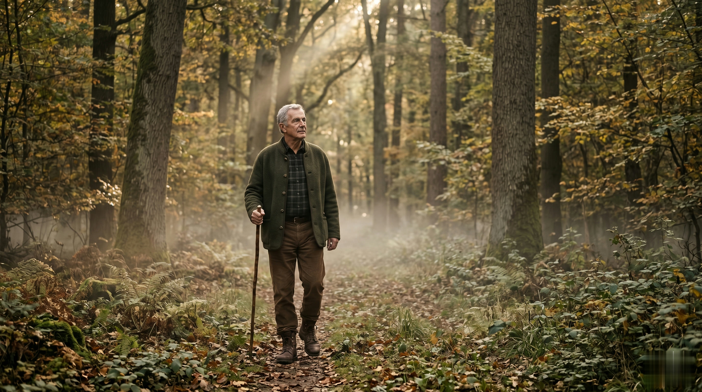
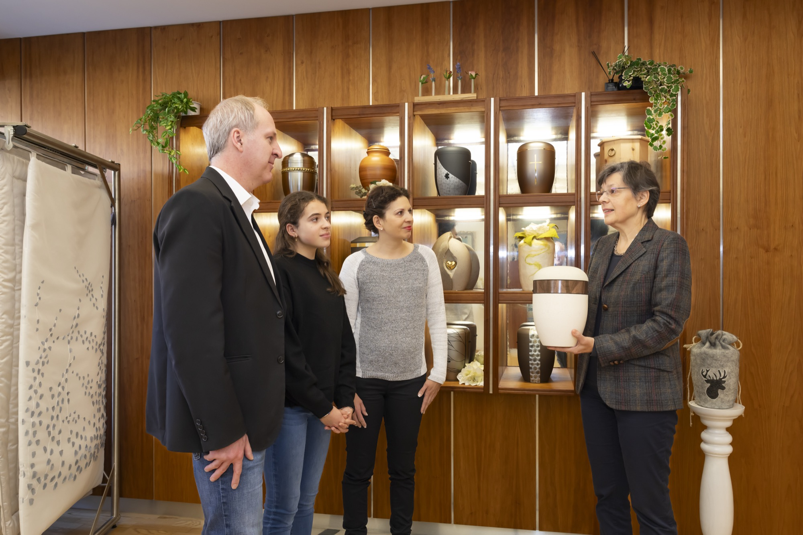
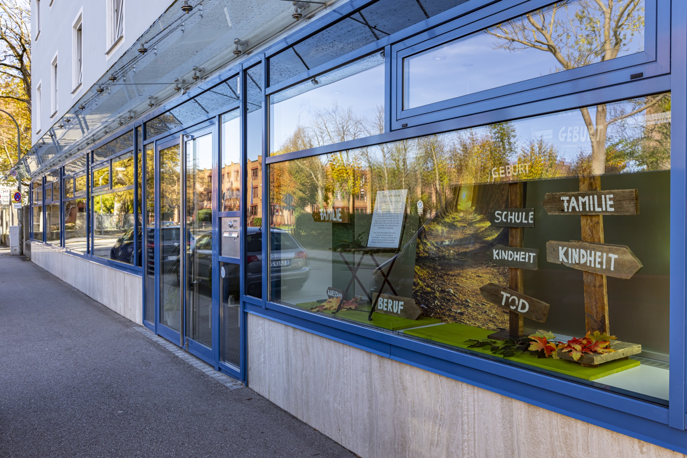

Bestattungsinstitut · Landshut · seit 1926 Weichselgärtner
Beraten. Betreuen. Begleiten.
Ihr Landshuter Familienbetrieb in der dritten Generation · fest verwurzelt in der Stadt und ihren Menschen.
0871 228 53 Im Trauerfall rund um die Uhr jemand für Sie erreichbarAuch nachts, an Wochenenden und Feiertagen. Alle weiteren Schritte gehen Sie nicht mehr allein.
Sterbefall eingetreten? Rufen Sie uns an · wir übernehmen alles Weitere.
0871 228 53Alle weiteren Schritte gehen Sie nicht mehr allein.
Wir nehmen Ihnen das Bürokratische und Organisatorische ab · und sind zugleich empathische Ansprechpartner mit einem offenen Herzen und Ohr für Ihre Gefühle, Wünsche und Sorgen.
Wir sind sofort erreichbar
Beim Bestattungsinstitut Hans Weichselgärtner ist rund um die Uhr jemand für Sie da. Nach Ihrem Anruf besprechen wir in Ruhe, was als Nächstes geschieht · in Ihrem Tempo.
Wir erledigen die Behördengänge
Wir kennen die Abläufe, die richtigen Adressen und Kontakte: Behördengänge, Terminabstimmungen, Trauerpost, Abholungen in ganz Deutschland und Überführungen im In- und aus dem Ausland.
Wir gestalten den Abschied mit Ihnen
Trauerfeier, Blumen, Musik, Rede und Rituale: Gemeinsam finden wir die Form, die zu dem Menschen passt. Dabei gilt: Alles kann, nichts muss · Ihre Situation bestimmt das Maß unserer Begleitung.

Aus der Tradition in die Zukunft.
Alles begann mit einer Schreinerei: 1926 gründete Hans Weichselgärtner nach erfolgreicher Meisterprüfung seine eigene Werkstatt, in der er neben Möbeln auch Särge fertigte. Als sich die Möbelfertigung in den Sechzigerjahren auf industrielle Wege verlagerte, gewann das Bestattungswesen an Bedeutung · und Hans Weichselgärtner ließ sich zum fachgeprüften Bestatter ausbilden.
Heute führt seine Enkelin, die geprüfte Bestatterin Irmgard Weichselgärtner, das Institut in dritter Generation. Unterstützt wird sie bereits von ihrer Tochter Sophia. So verbinden sich im Hause Weichselgärtner Tradition und Moderne, Erfahrung und Innovation, Familie und Heimatverbundenheit.
Oft kennen wir die Verstorbenen und ihre Familien seit vielen Jahren · diese Nähe ist die liebevolle Basis für persönliche Trauerfeiern, in denen Sie sich aufgefangen fühlen.

Ihr Ort fürs Abschiednehmen.
In der Landshuter Gestütstraße 2 sind wir für Sie da: von der ersten Beratung über die detaillierte Planung bis zur Trauerfeier. In unserem großen Ausstellungsraum können Sie sich in Ruhe mit Sargmodellen und Urnendesigns vertraut machen.
Für die wertvollen Momente des Abschieds haben wir zwei Abschiedsräume eingerichtet · hier finden Sie in den Tagen vor der Bestattung uneingeschränkt Zeit und Ruhe zum persönlichen Verabschieden.
Besonders glücklich sind wir über unsere große, lichtdurchflutete Trauerhalle: Hier gestalten wir ohne Zeitdruck und mit einem Trauerredner Ihrer Wahl eine Feier für bis zu 120 Gäste.
Dinge frühzeitig regeln.
Ob Bestattungsvorsorge, Testament, Vorsorgevollmacht oder Patientenverfügung: Wer selbstbestimmt bleiben möchte, regelt die wichtigen Dinge zu Lebzeiten · und entlastet damit die eigene Familie. Wir beraten Sie kostenlos und unverbindlich.
Mehr zu Vorsorge und VerfügungenRund um die Uhr jemand für Sie erreichbar.
0871 228 53Rufen Sie an, wann immer Sie uns brauchen · auch außerhalb der Geschäftszeiten sind wir nach Vereinbarung für Sie da.
- Adresse Bestattungsinstitut Hans Weichselgärtner · Gestütstraße 2 · 84028 Landshut
- Telefax 0871 282 49
- E-Mail info@weichselgaertner.com
- Bürozeiten Montag bis Freitag 8 bis 12 Uhr und 13 bis 17 Uhr · darüber hinaus nach Vereinbarung
Anfahrt: Gestütstraße 2, mitten in Landshut · wir bestatten auf allen Friedhöfen der Stadt und der Region, vom Hauptfriedhof bis zum Nordfriedhof St. Michael.
Route mit Google Maps planenSchreiben Sie uns
Wir melden uns zeitnah bei Ihnen · in dringenden Fällen rufen Sie bitte direkt an.